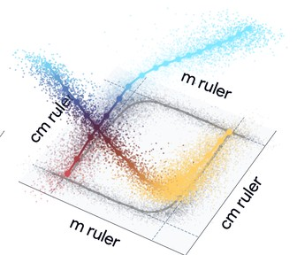
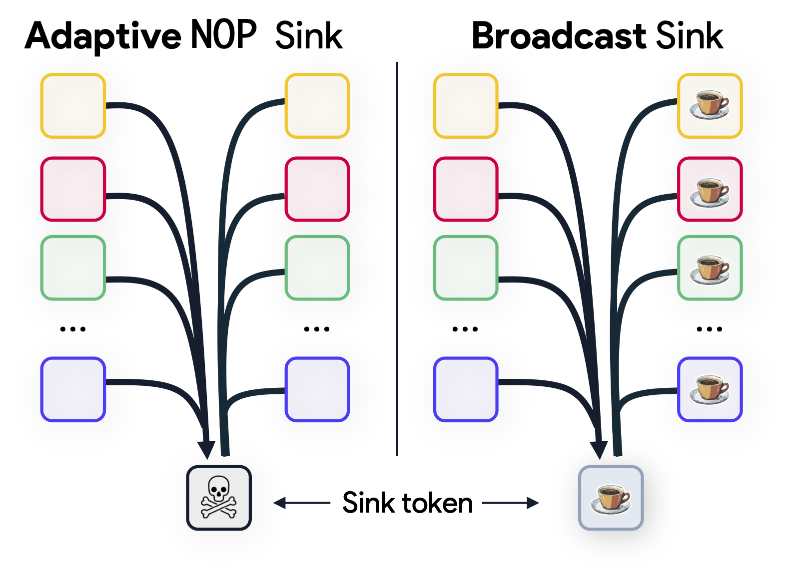
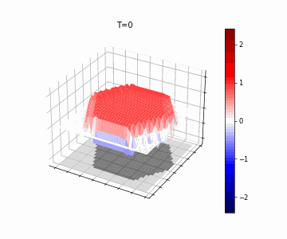

I am a fourth-year computer science PhD candidate at Harvard University,
advised by Professor Demba Ba. I am supported by the
Kempner Institute Graduate Fellowship. In summer 2026, I worked as a Research Fellow at
 .
.
I'm interested in the phenomenology of neural representations: their content and geometry, and the mechanisms and principles that give rise to them. Ultimately, I believe understanding model representations is essential for AI safety and alignment.
Previously, I worked at the AI Institute in Dynamic Systems with Nathan Kutz and Ryan Raut. I earned my B.S. in computer science from the Allen School at the University of Washington, where I worked with Rajesh Rao and William Noble.

Research
* equal contribution


Website template from Jon Barron